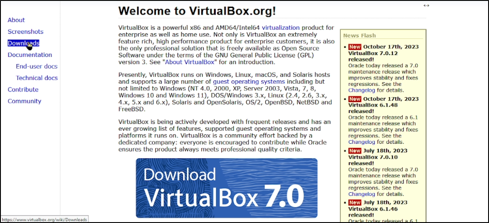
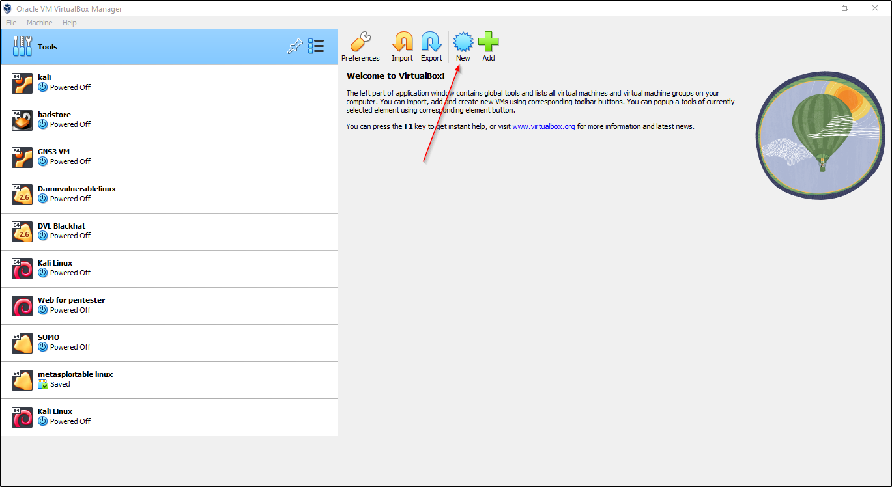
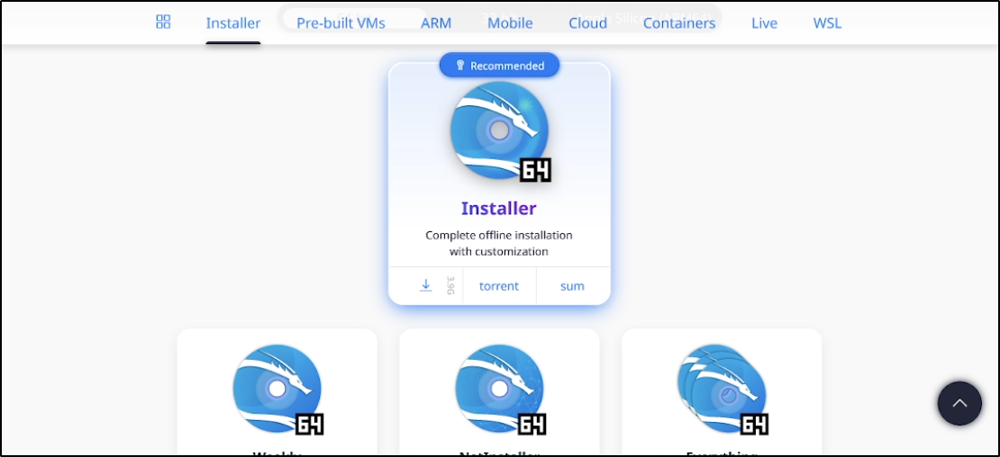
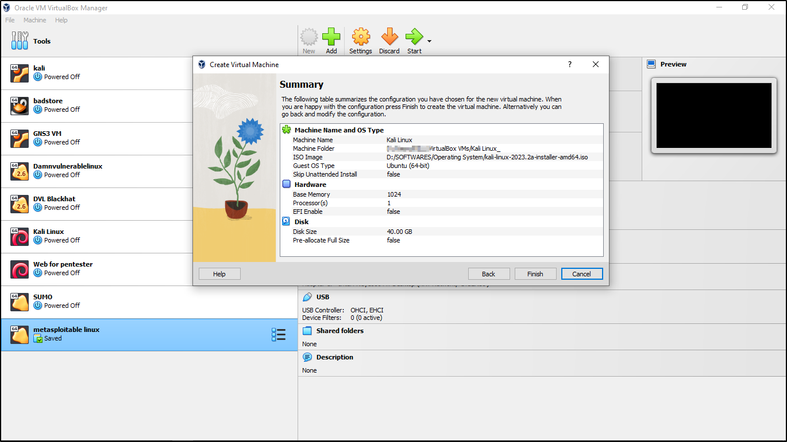
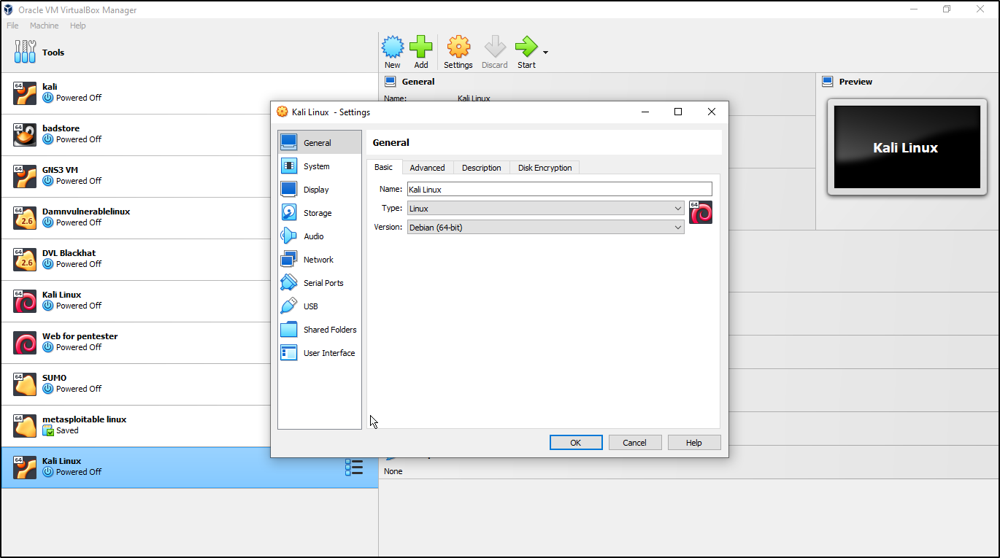
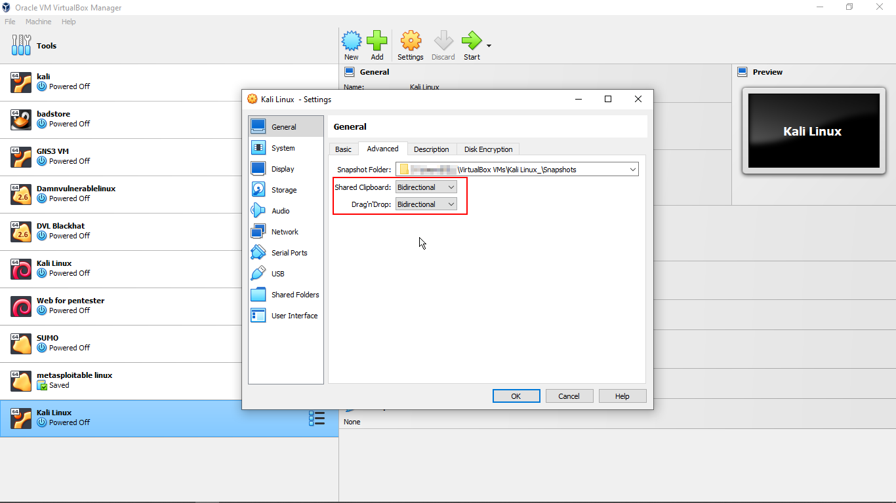
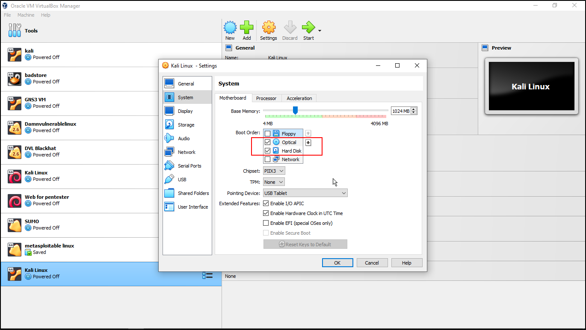
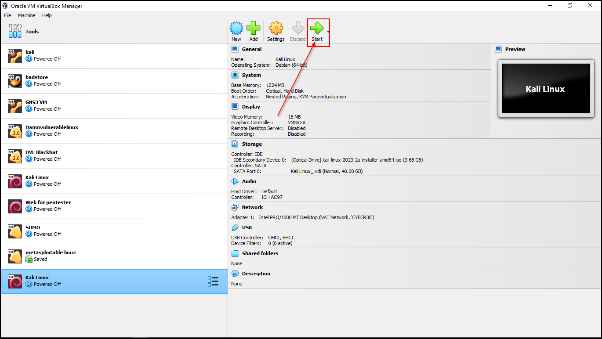
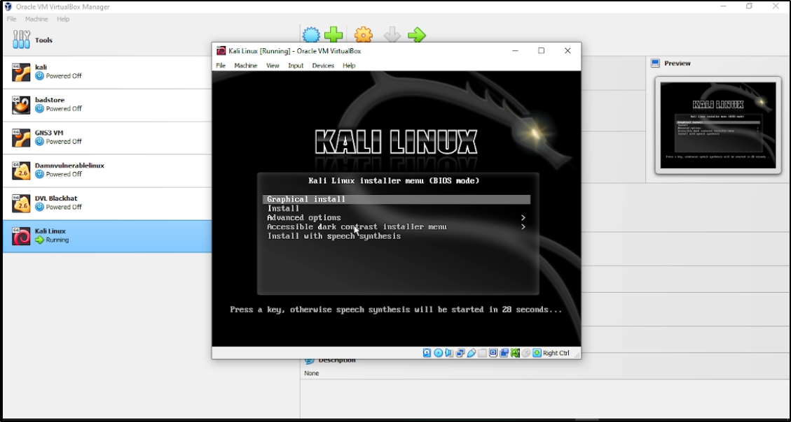
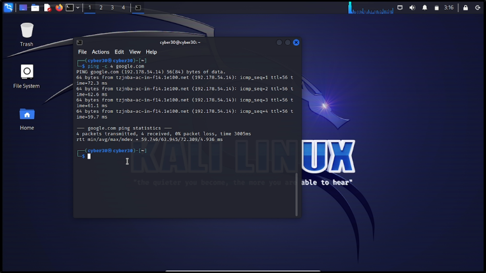

Setting up the Home Lab
Introduction
Kali Linux is the most widely used ethical hacking OS. It is a Debian-based Linux - based operating system developed for penetration testing and digital forensics. It is financed and maintained by Offensive Security Ltd. The greatest and most widely used operating system for hackers is Kali Linux. It includes the first Nexus device open-source Android penetration test. The forensic mode is another excellent feature of the Kali Linux operating system.
Features:
Testing for penetration is possible. Both a 32-bit and 64-bit version of this platform is available. Kali Linux can be updated. This OS supports complete disc encryption. The network-based Kali Linux installation can be easily automated and customized. Support for live USB installations. Forensic work can be done using its forensics mode.System Requirements:
2 GB of RAM 20 GB of disk space 32- or 64-bit CPU (single-core) with 2 GHz speed or better High-definition graphics card and monitor Broadband internet connection
In this step by step I will show you on how to install and configure Kali Linux in VirtualBox. And I will walk you through the process, ensuring you're ready to explore the powerful tools within this penetration testing distribution.

Step 1: Downloading VirtualBox
If you don't have VirtualBox installed, download it from official website VirtualBox and follow the installation wizard.

Once installed, launch VirtualBox to create a new virtual machine.

Step 2: Downloading Kali Linux
We need to download the Kali Linux ISO from the official website kali. Choose the appropriate version based on your system architecture (32-bit or 64-bit).

Step 3: Creating a New Virtual Machine
Click on "New" in VirtualBox, and name your virtual machine (e.g., "Kali Linux" and it is okay to use any name, but I simply used Kali Linux). And click on "Next" to continue

Allocate at least 2 GB of RAM for optimal performance and allocate not more than 25% of your system RAM for better practices but I will choose 1 GB of RAM for some reason. The more RAM you give your virtual machine, the better and faster it will be.


Choose the storage fixed size. Allocate at least 20 GB of space to your virtual hard disk but I recommend using aleast 40 GB of space for flexibility. Then click "Next" to create a new virtual hard disk.

We get summary display that show all our configuration in nice format. Just press "Finish" to create the virtual machine( We can go back and modify the configuration later).

Step 4: Configuring the Virtual Machine
With your virtual machine selected, click on "Settings." Under the "General" tab, under the "Basics", Select "Linux" as the type and "Debian" as the version because Kali is a Debian-based Linux operating system.

On the "General" Under the "Advanced" tab, change both Shared Clipboard and Drag'n Drop from "Disabled" to "Bidirectional" to allow drag n drop or copy and paste from virtual machine to system machine(like copy command from Windows computer and paste in Kali virtual machine).

Under the "System" tab, Uncheck the Floppy option above the Optional option in the boot order to avoid booting from Floppy Disk.

Under the "Network" tab, select any network that suite with your needs or use default but I choose "CYBER30 NAT Network" that I already created for my home lab to enable virtual machines communate with each other. Then click "OK" to save the configuration.

Step 5: Installing Kali Linux
Start your virtual machine while your Kali machine selected like below.

The Kali Linux installation wizard will appear then select "Graphical Install"(I suggest using the graphical install for beginners. Use your keyboard keys(UP Arrow to move up and DOWN Arrow to move down) to navigate the menu.)

Select the language that you are most comfortable with then click "Continue" but I will continue with default language.

Select your location or use default location then click "Continue" but I will continue with default location.

Selet keyboard layout that you are most comfortable with and click "Continue" but I will continue with default keyboard.

Enter your name servers if I have specific name servers then click "contniue" or leave the field blank if you don't want to use any name servers

Enter your full name or use your desired name but I will continue with "CYBER30" instead of my real name.

Enter your username or use given reasonable choice by Kali then click "Continue" but I will continue with "CYBER30".

Enter password that you feel more feel and easy to remember but dificult to crack then click "Continue".

Select the timezone that you want to use or it automatically updated from network time protocol(NTP) server if internet connection is available then click "Continue"

When prompted, ask for partition. Choose the "Guided - use entire disk" option for partitioning then click "Continue". “Guided - use entire disk” is the simplest and most common partition scheme, which will allocate an entire disk to Kali Linux and most recommended for beginners.

Choose the "Finish partitioning and write changes to disk" option for saving the partition configuration then click "Continue".

Step 6: Completing the Installation
Allow the installation to complete, and when prompted, ask for GRUB Bootloader installation. Select "Yes" to install the GRUB bootloader.

Select "dev/sda" which is most recommended for beginners or select manualy to use your desired device for Bootloader then click "Continue".After select device for Bootloader installation then allow to complete installation

Allow the installation to complete. Once finished, restart the virtual machine.

Step 7: Configuring Kali Linux
Log in with the credentials you created during the installation.

Open a terminal, ping google.com by using this command ping -c 4 google.com(to check if internet connection is available).

Clean terminal by using clear or using this shortcut CTRL + L then update the system using the following commands: sudo apt update and upgrade using the following commmand: sudo apt upgrade -y

Conclusion
Congratulations! You've successfully installed and configured Kali Linux in VirtualBox. Your virtual environment is now ready for ethical hacking and cybersecurity exploration. You can familiarize yourself with basic commands by CLICK HERE TO READ MORE and the powerful tools within this penetration testing distribution( like Metasploit, Burp Suite, Nmap, Wireshark, Aircrack-ng, et).